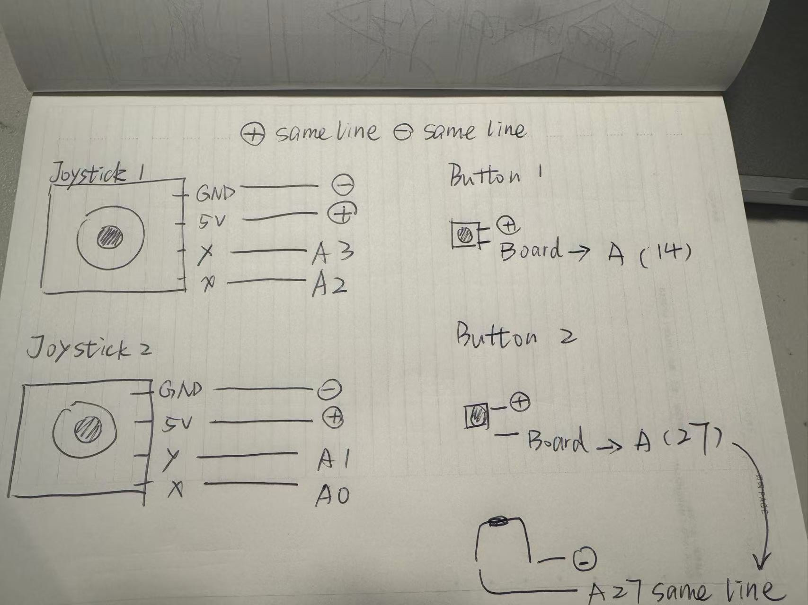
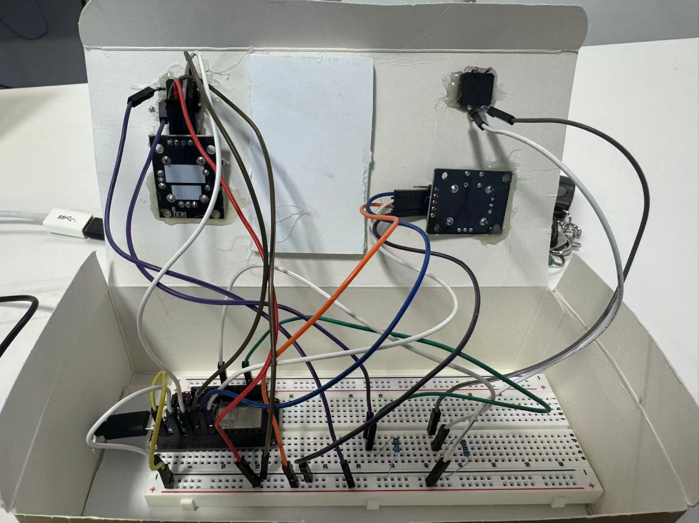
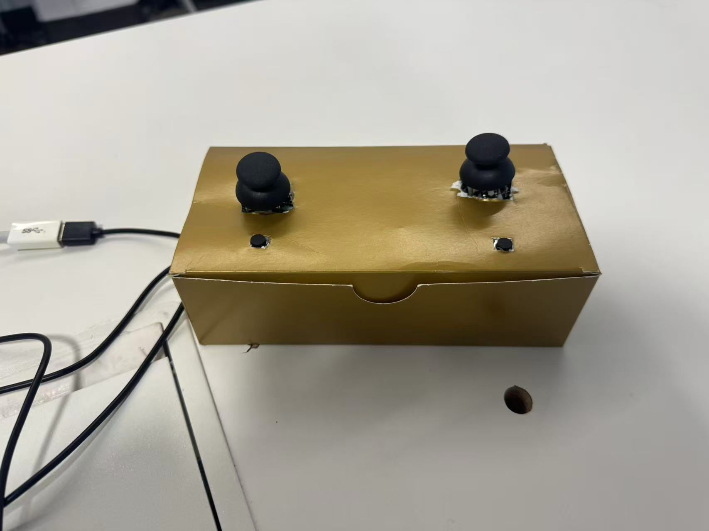
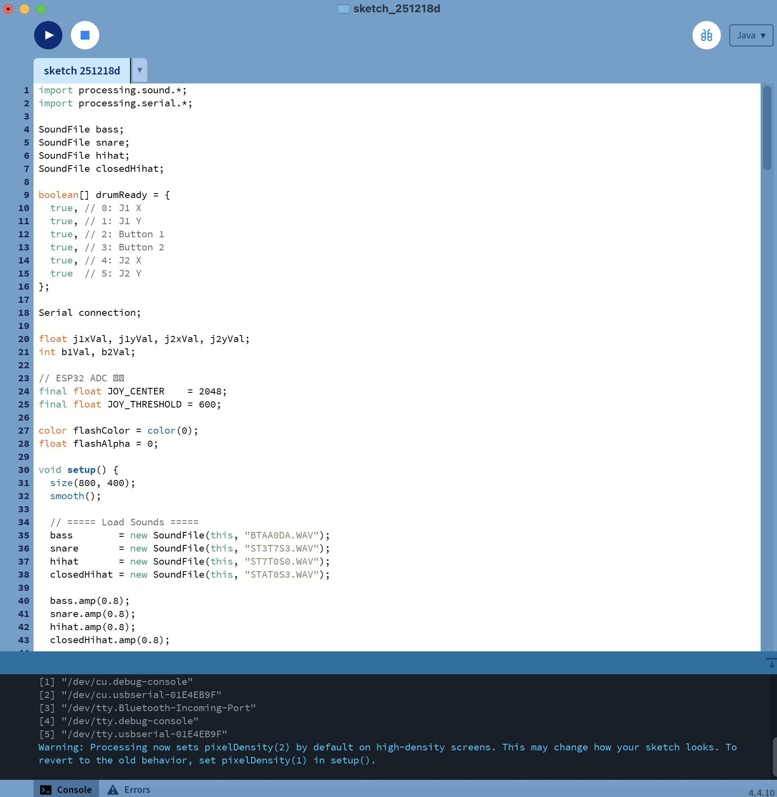
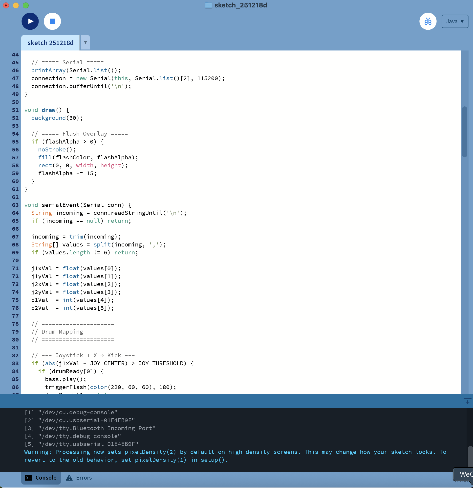
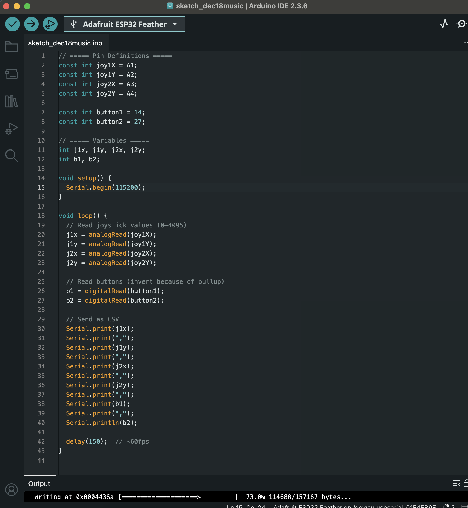

I want to use a joystick to control the effect we achieved in class with the potentiometer and button. Thank you, Maxim, for your patience, help, and understanding.
This assignment was not successful mainly because of mistakes in the circuit connections, choosing the wrong code port, and not selecting value[2]. I also did not invest enough time and patience into the project, and I’m sorry about that. I will take it more seriously next semester. The correct circuit connection should be like this.I reviewed the connection by drawing.





